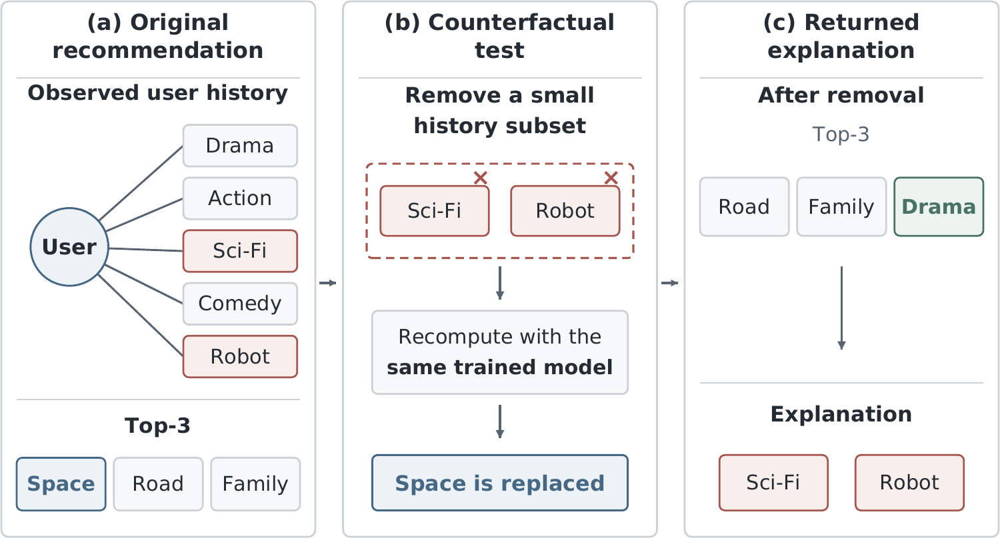
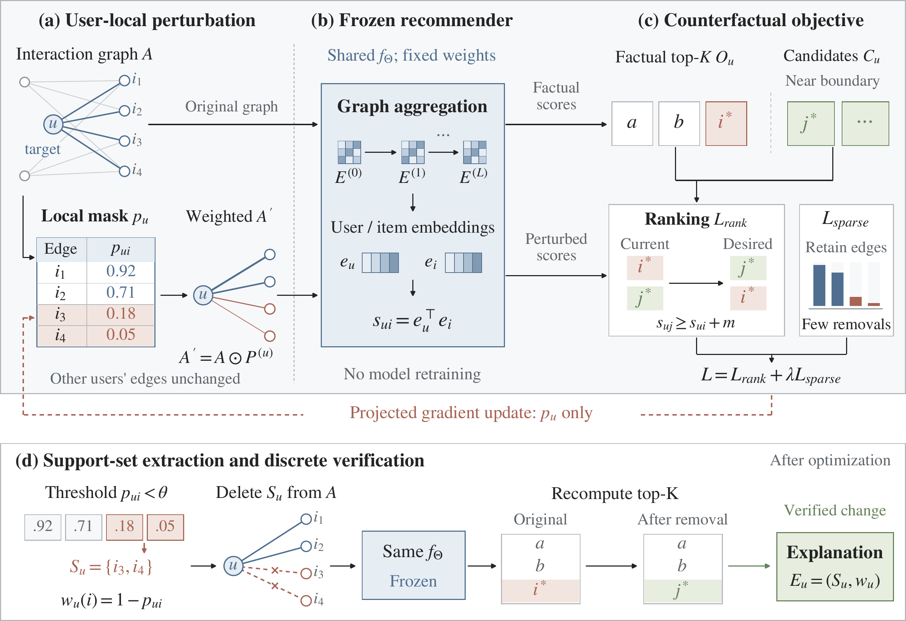
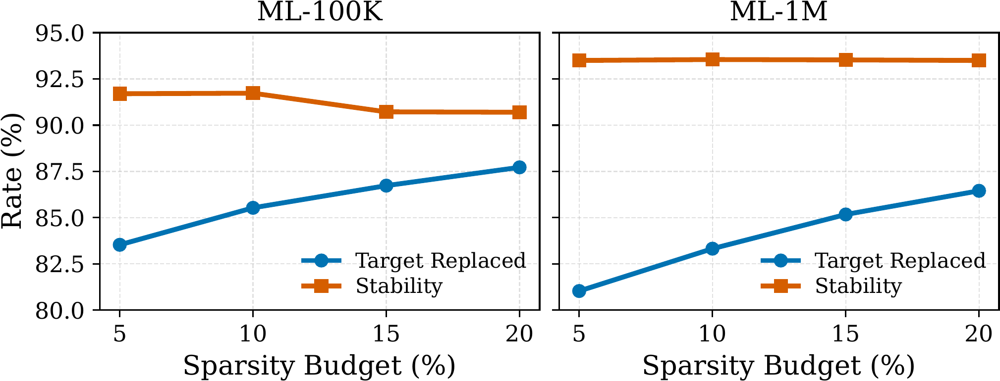
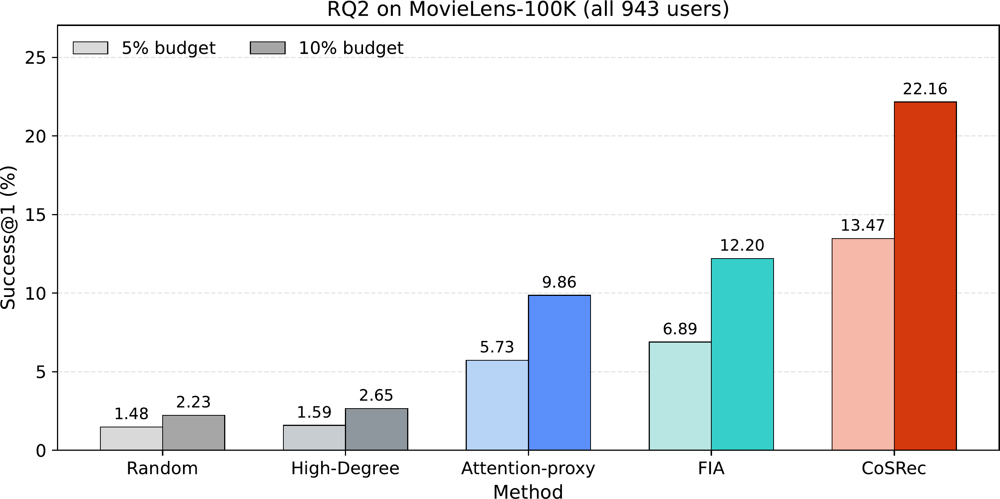
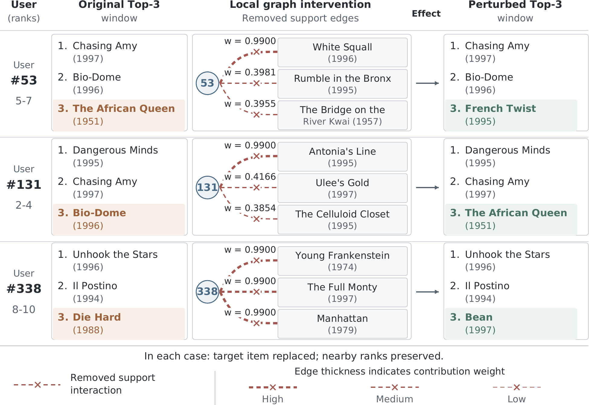
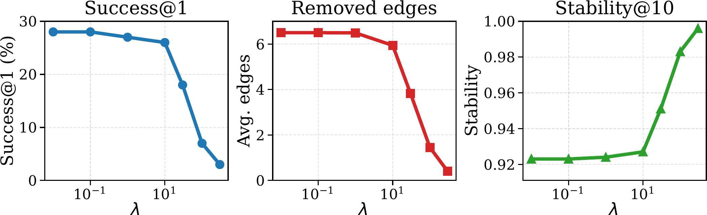

International Conference on Neural Information Processing (ICONIP), 2026 · Melbourne
Explaining Graph Recommendations
via Counterfactual Support Sets
1 Xi'an Jiaotong-Liverpool University, Suzhou, China
2 University of Liverpool, Liverpool, United Kingdom
3 New York University, New York, United States of America
† Corresponding author
Abstract摘要
Graph-based recommender systems can provide accurate personalized recommendations by learning from user-item interaction records. However, because recommendations involve a large number of historical interactions, it remains difficult to determine which past interactions actually cause an item to appear in the recommendation list. Existing explainable recommendation methods commonly show similar users, related items, important neighbors, attention paths, or influential interactions, but they do not directly answer whether the recommendation would change if this evidence were removed.
We propose CoSRec, a post-hoc method that explains graph recommendations by finding a small set of historical interactions whose removal changes the recommendation. CoSRec keeps the trained recommender fixed, learns which interactions of the target user should be retained or weakened, and promotes reasonable alternatives while removing as few interactions as possible. The selected interactions are returned as a support-set explanation and verified by recomputing the recommendation after deletion. Experiments with LightGCN on MovieLens show that CoSRec changes target recommendations with sparse edge removals while preserving most of the surrounding recommendation list. In the all-user comparison, CoSRec reaches Success@1 of 13.47% and 22.16% under 5% and 10% sparsity budgets.
图推荐系统通过学习用户与物品的交互记录生成个性化推荐。然而，一次推荐通常涉及大量历史交互， 因此仍然难以判断究竟哪些历史行为真正促使某个物品进入推荐列表。现有可解释推荐方法通常展示相似用户、 相关物品、重要邻居、注意力路径或高影响交互，但它们没有直接回答一个关键问题：如果移除这些证据， 推荐结果是否会改变？
我们提出 CoSRec，一种后验图推荐解释方法，用于寻找一小组历史交互，使其被移除后推荐结果发生改变。 CoSRec 保持训练好的推荐模型不变，只学习目标用户的哪些交互应被保留或削弱，并在尽量少移除交互的同时， 推动合理候选物品替换原始推荐。最终选出的交互构成支持集解释，并通过实际删除交互、重新计算推荐来验证。 在 MovieLens 数据集与 LightGCN 上的实验表明，CoSRec 能通过稀疏边移除改变目标推荐，同时保留大部分原始 推荐列表。在全用户比较中，5% 与 10% 稀疏预算下的 Success@1 分别达到 13.47% 和 22.16%。
Key Contributions主要贡献
- A testable explanation task. CoSRec defines an explanation as a compact subset of a user's history whose removal changes the target recommendation, moving beyond evidence that is merely correlated with the output.
- A post-hoc, user-local explainer. The method learns one retention value for each interaction in the target user's history while keeping the graph recommender and all model parameters fixed.
- Ranking-aware sparse search with verification. A counterfactual ranking objective promotes near-boundary candidates, a sparsity term limits removals, and discrete deletion verifies that the returned support set actually changes the top-K result.
- Evaluation across validity and specificity. Experiments on MovieLens 100K and 1M measure both replacement success and preservation of the surrounding recommendation list, including an all-user comparison against four edge-removal baselines.
- 可检验的解释任务。 CoSRec 将解释定义为用户历史中的一个紧凑子集：移除该子集后， 目标推荐必须发生改变，从而超越仅与输出相关的证据。
- 后验、用户局部的解释器。 方法只为目标用户的每条历史交互学习一个保留值， 图推荐模型及其全部参数始终保持冻结。
- 面向排序的稀疏搜索与验证。 反事实排序目标推动临界候选物品替换原始推荐， 稀疏项限制移除数量，最后通过真实删边验证支持集是否确实改变 top-K 结果。
- 同时评估有效性与特异性。 在 MovieLens 100K 与 1M 上同时测量目标替换成功率和 周边推荐列表的保留程度，并在全用户设置下与四种删边基线比较。
Motivation研究动机
Relevance-based explanations can identify interactions that look important, yet a lower score does not necessarily alter a ranking. A counterfactual explanation instead tests model dependence: remove a small subset of the user's history, run the same trained recommender again, and accept the subset as an explanation only when the target recommendation is replaced.
基于相关性的解释可以指出看起来重要的交互，但分数下降并不一定改变排序。反事实解释直接检验模型依赖： 从用户历史中移除一个小子集，使用同一个训练好的推荐模型重新计算；只有当目标推荐被替换时， 该子集才被接受为解释。

Method方法
CoSRec learns a user-local retention mask over the target user's observed interactions. The weighted graph passes through the same frozen recommender, so gradients update only the mask. A pairwise ranking objective encourages near-boundary candidate items to outrank the factual top-K items, while a sparsity penalty retains as much history as possible. Low-retention interactions form the support set, which is then deleted from the graph for discrete verification.
CoSRec 在目标用户的已观测交互上学习一个局部保留掩码。加权后的图仍由同一个冻结推荐模型处理， 因而梯度只更新掩码。成对排序目标推动接近排序边界的候选物品超过原始 top-K 物品， 稀疏惩罚则尽量保留用户历史。低保留值交互组成支持集，随后从图中真实删除并进行离散验证。

1. User-local retention mask 1. 用户局部保留掩码
Each edge in the target user's history receives a retention value between 0 and 1. Other users' edges remain unchanged, so the intervention stays local to the recommendation being explained.
目标用户历史中的每条边获得一个 0 到 1 之间的保留值，其他用户的边保持不变， 因而干预仅作用于当前需要解释的推荐。
2. Frozen recommender and graph-dependent scores 2. 冻结推荐模型与图依赖分数
CoSRec uses the same learned parameters for the original and weighted graphs. Graph propagation and item scores are recomputed after each mask update, while recommender parameters never change.
原图与加权图共享同一组已学习参数。每次掩码更新后都重新执行图传播并计算物品分数， 但推荐模型参数始终不变。
3. Ranking and sparsity objectives 3. 排序目标与稀疏目标
The ranking loss compares factual top-K items with high-scoring unobserved candidates near the ranking boundary. The total objective combines this loss with a sparsity penalty on edge removal: L = Lrank + λLsparse.
排序损失比较原始 top-K 物品与排序边界附近的高分未观测候选物品。总目标将该损失与删边稀疏惩罚结合： L = Lrank + λLsparse。
4. Support-set extraction and verification 4. 支持集提取与验证
Interactions below the retention threshold form the support set, with contribution weight 1 − pui. CoSRec deletes these edges, recomputes the recommendation, and returns the explanation only after the target top-K result changes.
保留值低于阈值的交互组成支持集，其贡献权重为 1 − pui。CoSRec 删除这些边并重新计算推荐， 仅在目标 top-K 结果确实改变后返回解释。
Experiments实验
Experiments use MovieLens 100K (943 users, 1,682 items, 100,000 interactions) and MovieLens 1M (6,040 users, 3,900 items, 1,000,000 interactions). Ratings are binarized and split 80/20 for training and testing. CoSRec operates on a frozen LightGCN backbone and is compared with Random, High-Degree, Attention-proxy, and FIA edge-removal baselines.
Success Rate measures whether the target recommendation changes. Stability@10 measures overlap between the original and perturbed top-10 lists, capturing whether the intervention remains specific to the target instead of broadly disrupting the ranking.
实验使用 MovieLens 100K（943 位用户、1,682 个物品、100,000 条交互）和 MovieLens 1M （6,040 位用户、3,900 个物品、1,000,000 条交互）。评分被二值化，并按 80/20 划分训练集与测试集。 CoSRec 在冻结的 LightGCN 主干上运行，与 Random、High-Degree、Attention-proxy 和 FIA 四种删边基线比较。
Success Rate 衡量目标推荐是否改变；Stability@10 衡量干预前后 top-10 列表的重合度， 用于判断干预是否聚焦于目标物品，而非大范围扰乱整个排序。
- Sampled target cases: a 5% budget replaces the Top-1 item in 83.53% of ML-100K cases and 81.03% of ML-1M cases.
- All-user comparison: CoSRec reaches 13.47% and 22.16% Success@1 at 5% and 10% budgets across all 943 ML-100K users.
- User-level verification: case studies identify concrete historical interactions whose deletion changes the target item while preserving nearby ranks.
- Sparsity control: increasing λ reduces average removals from 6.50 to 0.40 and raises Stability@10 from 0.923 to 0.996, with lower Success@1.
- 采样目标案例：5% 预算下，ML-100K 与 ML-1M 的 Top-1 替换率分别为 83.53% 和 81.03%。
- 全用户比较：在全部 943 位 ML-100K 用户上，5% 与 10% 预算下的 Success@1 分别达到 13.47% 和 22.16%。
- 用户级验证：案例研究给出可核验的具体历史交互，删除后目标物品改变，而附近名次保持稳定。
- 稀疏性控制：随着 λ 增大，平均删边数从 6.50 降至 0.40，Stability@10 从 0.923 升至 0.996，同时 Success@1 下降。
Validity and specificity on sampled targets 采样目标上的有效性与特异性
On susceptible targets with near-boundary alternatives, a 5% edge-removal budget replaces the original Top-1 item in 83.53% of ML-100K cases and 81.03% of ML-1M cases. At a 20% budget, replacement reaches 87.72% and 86.45%, while Stability@10 remains above 90% on both datasets.
在具有临界候选物品的易变化目标上，5% 删边预算可使 ML-100K 与 ML-1M 中 83.53% 和 81.03% 的 原始 Top-1 物品被替换。预算增至 20% 时，替换率达到 87.72% 和 86.45%，两套数据的 Stability@10 仍高于 90%。

All-user counterfactual comparison 全用户反事实比较
The stricter RQ2 setting evaluates all 943 ML-100K users with equal edge-removal budgets. CoSRec has the highest Success@1 at both budgets. At 10%, it reaches 22.16%, 9.96 percentage points above FIA, while retaining 93.15% top-10 overlap.
更严格的 RQ2 设置在相同删边预算下评估全部 943 位 ML-100K 用户。CoSRec 在两种预算下均取得最高 Success@1；10% 预算下达到 22.16%，比 FIA 高 9.96 个百分点，同时保留 93.15% 的 top-10 重合度。
| Method | 5% budget | 10% budget | ||
|---|---|---|---|---|
| Success@1 | Stability@10 | Success@1 | Stability@10 | |
| Random | 1.48 | 98.39 | 2.23 | 97.65 |
| High-Degree | 1.59 | 98.41 | 2.65 | 97.26 |
| Attention-proxy | 5.73 | 97.60 | 9.86 | 95.81 |
| FIA | 6.89 | 96.82 | 12.20 | 94.52 |
| CoSRec | 13.47 | 95.66 | 22.16 | 93.15 |

Verifiable user-level explanations 可核验的用户级解释
Each case reports an original local ranking window, the removed support interactions with learned weights, and the perturbed window. For users 53, 131, and 338, the target item changes after only three support edges are removed, while nearby ranks remain unchanged.
每个案例同时展示原始局部排序窗口、带学习权重的被移除支持交互，以及干预后的窗口。对用户 53、131 与 338，仅移除三条支持边即可改变目标物品，同时附近名次保持不变。

Sparsity sensitivity 稀疏性敏感度
The sparsity penalty λ controls the intervention strength. Across the tested range, larger λ reduces average removed edges from 6.50 to 0.40 and raises Stability@10 from 0.923 to 0.996, while Success@1 falls from 28.0% to 3.0%.
稀疏惩罚 λ 控制干预强度。在测试范围内，增大 λ 会使平均删边数从 6.50 降至 0.40， Stability@10 从 0.923 升至 0.996，同时 Success@1 从 28.0% 降至 3.0%。

BibTeX
Provisional citation. Proceedings volume, page numbers, and DOI will be added when the official ICONIP 2026 metadata becomes available.
临时引用信息。ICONIP 2026 官方出版信息公布后，将补充卷号、页码与 DOI。
@inproceedings{zhang2026explaining,
title = {Explaining Graph Recommendations via Counterfactual Support Sets},
author = {Zhang, Haichao and Zhang, Chong and Wang, Can and Qiu, Shi and Wang, Jia},
booktitle = {International Conference on Neural Information Processing},
year = {2026},
note = {Provisional entry; proceedings metadata forthcoming}
}Acknowledgements
This work was supported by the National Natural Science Foundation of China (Grant No. 72401232), the Natural Science Foundation of the Jiangsu Higher Educational Institution of China (Grant No. 23KJB520037), and the XJTLU Research Development Fund (RDF-21-01-053).
致谢
本工作得到国家自然科学基金（项目编号 72401232）、江苏省高等学校自然科学研究项目 （项目编号 23KJB520037）以及西交利物浦大学科研发展基金（RDF-21-01-053）的资助。